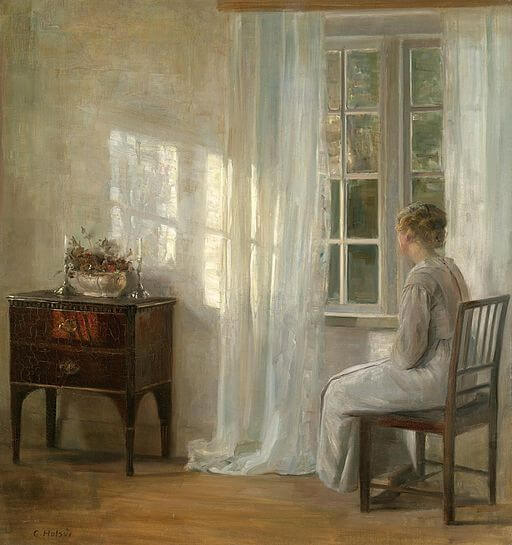
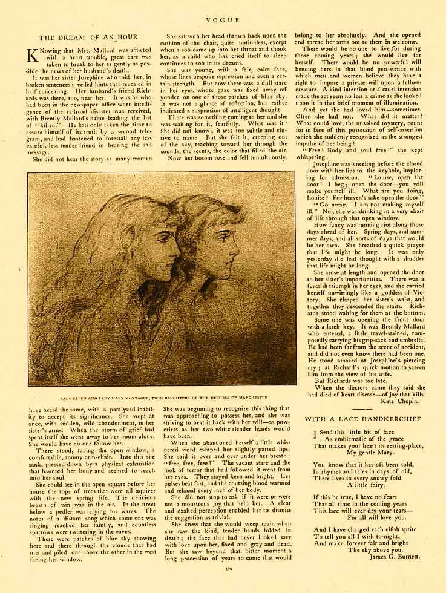

By Kate Chopin
Summary
"Free! Body and soul free!"
Kate Chopin’s The Story of an Hour follows Louise Mallard, a woman with a heart condition who learns that her husband has died in a railroad accident. Grieving at first, she retreats to her room and unexpectedly feels a profound sense of freedom as she realizes that his death releases her from the constraints of marriage and allows her to imagine a life lived for herself alone. This brief, transformative moment of emotional liberation fills her with joy and renewed purpose. However, when her husband unexpectedly walks through the door alive and unharmed, Louise collapses and dies. Her sudden death reveals the intensity of the freedom she had envisioned and highlights the suffocating nature of the social expectations placed upon married women in the nineteenth century.

What is the scope of patriarchy and oppresion?
How does if affect the female protagonist?
In The Story of an Hour, the scope of patriarchy and oppression is more subtle than in the other texts, yet it is still deeply influential in shaping Louise Mallard’s experience. Louise is not portrayed as a victim of overt physical or emotional abuse; instead, her oppression comes from the quiet but powerful constraints of nineteenth-century marriage. The societal expectation that a wife must live according to her husband’s will creates a life that feels narrow and emotionally stifling for Louise. Her sense of emptiness reveals how patriarchal norms limit her autonomy, self-expression, and personal fulfillment. Although her husband is described as kind, the institution of marriage itself restricts her identity to the point that the idea of living for herself feels revolutionary. This subtle form of oppression profoundly affects Louise by leaving her unaware of her own longing for freedom until she briefly glimpses it.

How does the female protagonist free herself?
How does this change her for the better moving forward?
In The Story of an Hour, Louise Mallard does not actively free herself from her circumstances. Instead, her sense of liberation arrives unintentionally when she is told that her husband has died. The news awakens a powerful feeling of relief, because she believes she has finally escaped the confines of a marriage that limited her independence and emotional fulfillment. In the social context of 1894, a woman could not simply choose to leave a marriage she no longer wanted, so this moment represents the only imaginable path to personal freedom. Although Louise’s sense of release is brief, it transforms her understanding of her own desires and reveals the depth of her longing for autonomy. Her newfound clarity about the possibility of living for herself marks a profound internal change, even though her death prevents her from carrying that realization into the future.